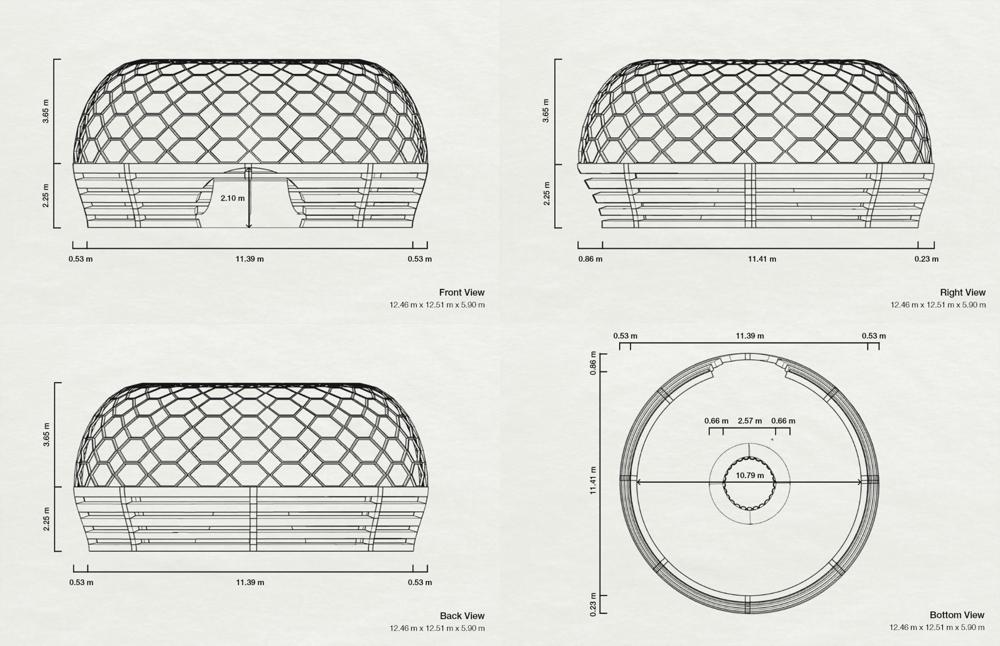
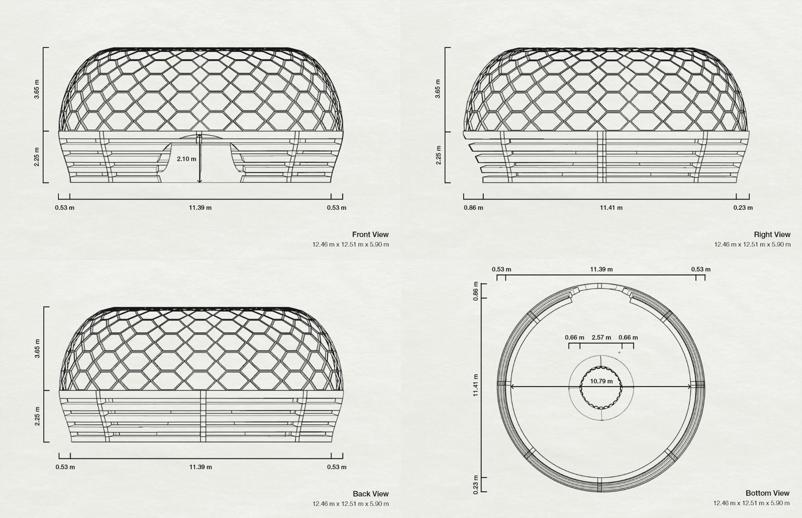
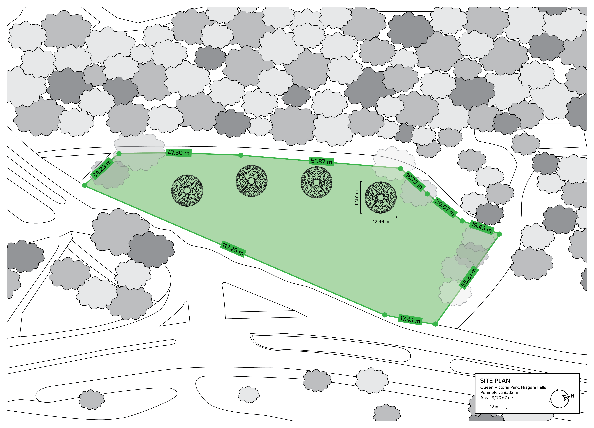
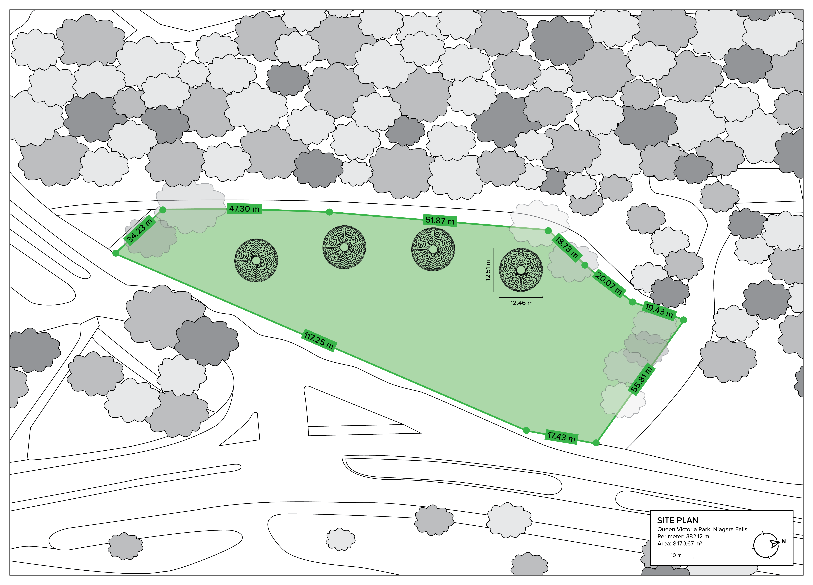

↓
ECO DOMES is a 2021 project concept aimed at creating immersive public spaces with sustainable integrations. The domes, designed to be placed in Queen Victoria Park at the Niagara Falls waterfront area, would provide a resting space for patrons while simulatenously utilizing the benefits of greenery for oxygen reproduction.


The structure of the domes was inspired by four
specific
public design examples: the
2014 "Cellular Tessellation"
pavilion in Sydney, Australia; the Hexalace
building in Mohali, India; the
Conga Room at the LA LIVE
nightclub
in Los Angeles, USA; and the interior of the Vista
Coffee
Shop in Guangzhou, China. Elements from each example were taken to form the prelimiary
shapes of the domes, as well as influence colours, materials and natural integrations.
Rhino 7's
panelling tools were used in the creation of the hexagonal grid that covers
the roof of each dome. Layered sections were added on the lower half to ensure that air would be able to
circulate in and out of the structure, inviting a partial form of privacy without being overly closed
in. A polycarbonate dome would be placed underneath the hexagonal grid to protect from exterior weather
elements, known for its durability and common usage in greenhouses.
 

The location for the domes, Queen Victoria Park, is often used for different events
based on the season. In the spring and summer, it becomes a picnic spot and play area for families. In
the winter, it hosts light displays that are a part of the city's annual Festival of Lights. This space
is located in an area that is heavily populated by tourists, making it accessible to all demographics
who would be interested in interacting with the domes.
Satellite imagery courtesy of
Google Earth.
 
